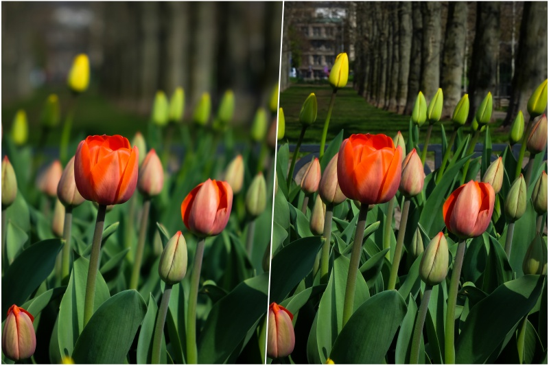
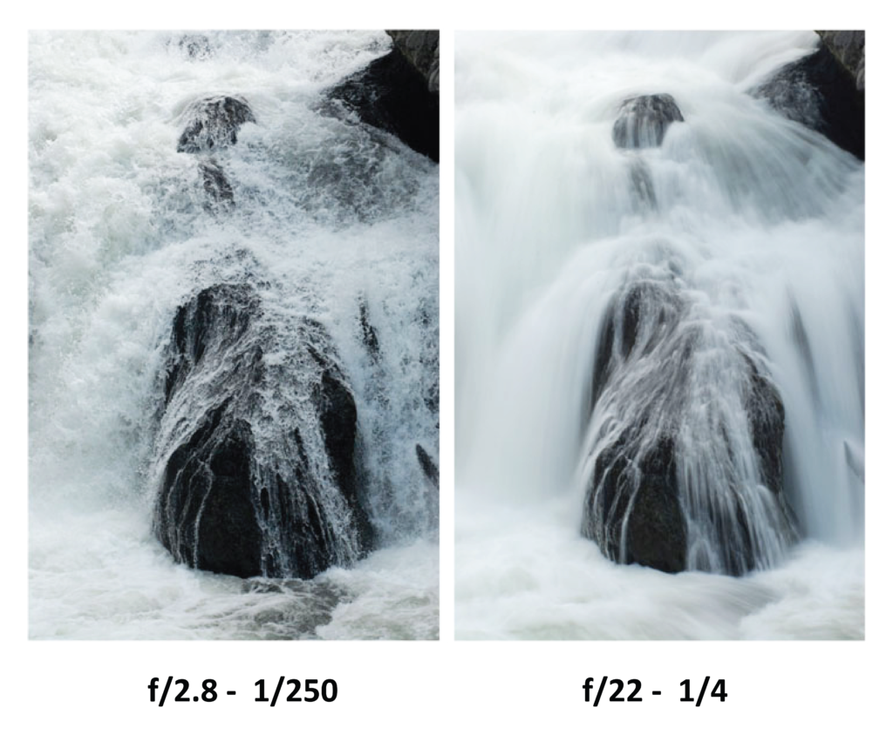
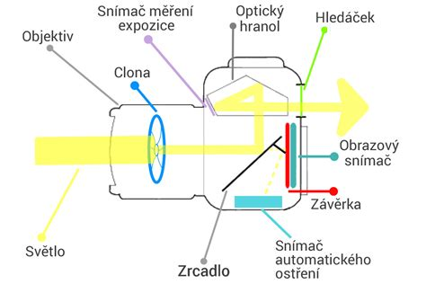
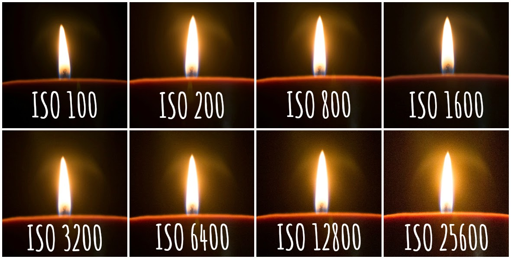
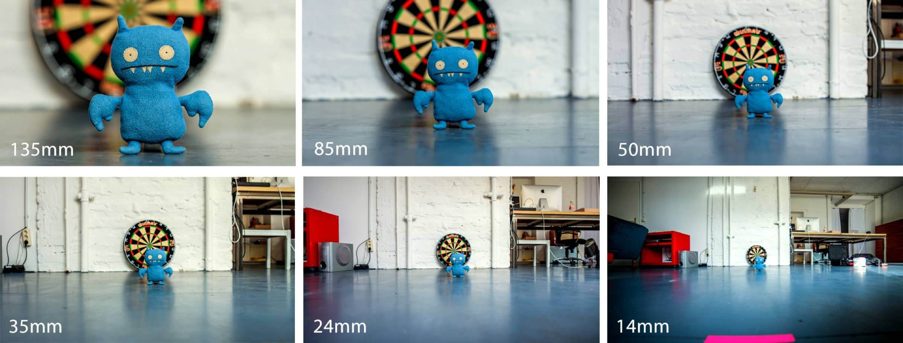
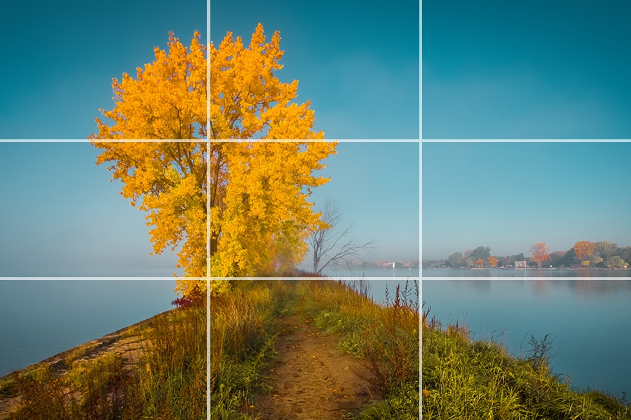
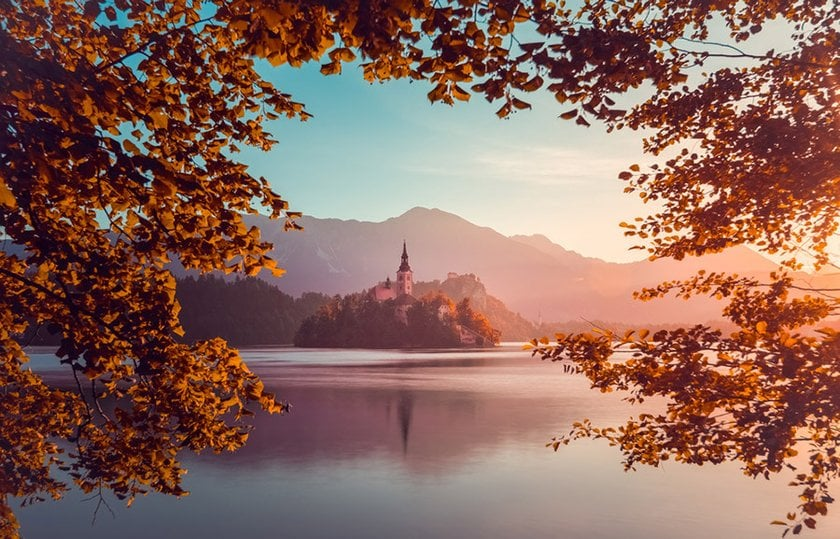

Digitání fotografie jso udnes běžnou součástí našeho života. Díky nim
jsme schopni zachytit svět kolem nás a díky elektrické podobě i
jendodušě upravovat a dílet našě snímky.
Digitální fotoaparát
Jak už název napovídá zaznamenává obraz v digitální formě. Narozdíl
od analogických fotoaparátů (světlocitlivý film) světlo dopadá na
polovodičový čip, který pak fotoaparát převádí do digitálního
obrazu.
Výhody oproti analogovému
fotoaparátu
Uložiště - film u analogu prostě není dostatečně velký a ty s větší
kapacitou jsou velmi drahé. Digitální fotoaparáty využívají SD karet,
díky který mohou uchovat najednou přes několik tisíc fotek.
Snímek lze prohlédnout - kdykoliv se můžeme podívat na snímek na
vestavěném displayi
Není třeba vyvolávat film
Stavba digitálního
fotoaparátu
Objektiv
Zachytává světlo a směřuje ho na senzor, díky němu můžeme upravovat
ohniskovou vzdálenost a zaostřovat.
Senzor (snímač)
Převádí světlo na elektrický signál, jeho kvalita ovlivňuje
rozlišení, šum a citlivost
Clona
Nastavitelný otvor v objektivu, její velikost ovlivňuje množství
světla dopadajícího na snímač - jas snímku a rozmazání pozadí (hloubka
ostrosti). Určuje se v f/číslo (f/2.8; f/5.6…)
Hloubka ostrosti určuje jaká část obrazu je ostrá -> rozostření
pozadí/rozostření popředí

Hloubka ostrosti
Závěrka
Mechanický nebo elektronický prvek, který se otevírá a zavírá na
určitou dobu a tím určuje čas, jak dlouho je senzor vystaven světlu.
Krátký čas “zmrazí” moment (vidíme jednotlivé kapky vody,
projíždějící auto) a naopak dlohý způsobuje rozmazání (voda vypadá jako
táhlý proud, projížďející auta jsou barevné čáry).

Rychlost závěrky
Udává se ve frekvenci za sekundu f/čas (1/500s 1/200s)

Stavba Fotoaparátu
Funkce fotoaparátu a pojmy
ISO citlivost
Označuje citlivost snímače na světlo. Vyšsí ISO znamená jasnější
obraz při slabém světle, ale způsobí větší šum.

ISO
Expozice
Celkové množství světla dopadajícího na senzor. Je ovlivněna
kombinací clony, času závěrky a ISO.
Ohnisková vzdálenost
Ohnisková vzdálenost fotoaparátu je vzdálenost mezi čočkou a
snímačem. Ovlivňuje úhel a zvětšení obrazu.
krátká (10-35mm) - širokoúhlý objektiv
střední (kolem 55mm) - nejpřirozenější
dlouhá (>85mm) - úzký pohled (portréty)

Ohnisková vzdálenost
Zrcadlovka vs Bezzrcadlovka?
Digitální fotoaparáty se ještě dělí na zrcadlové a bezzrcadlové.
Zrcadlovky mají narozdíl od bezzrcadlových digitálních fotoaparátů
optický hranol, který umožňuje v hledáčku vidět obraz rovnou přes
objektiv. Kdežto bezzrcadlové pouštějí rovnou na samotný senzor a vše
zobrazují digitálně. Bezzrcadlovky bývaly drahé, ale cena dnes se už
pomalu vyrovnává. Hlavní výhodou bezzrcadlových fotoaparátů je jejich
kompaktnost - nemusí mít zabudovaný hranol.
Zásady kompozice
Kompozice je způsob, jakým jsou prvky na fotorafii uspořádány. Dobrá
kompozice dělá snímek zajímavějším, přehlednějším a estetičtejším.
Pravidlo třetin
Rozdělení snímku na třetiny (pomocí pomyslné mřížky). Hlaní objekty
by měly být umístěny na průsečících těchto linií.

Pravidlo třetin
Pohledová linie
Vede diváka směrem k hlavnímu objektu (v umění obecně se používá
pojem jednobodová perspektiva).
Pohledové linie
Zarámování
Využití okolních objektů (např. větve, okna…) k vytvoření přirozeného
rámu kolem hlavního motivu

Zarámování
Úprava fotografií
Pro zlepšení kvality fotografie je vhodné digitální fotky trochu
upravit.
Mezi základní úpravy patří:
Úprava expozice - zesvětlení nebo ztmavení fotografie
Kontrast a jas - zvýraznění rozdílů mezi světlými a tmavými
částmi
Ořezání - odstranění rušivých částí nebo změna kompozice
Základní programy na úpravu fotografií jsou třeba Adobe Photoshop,
GIMP, Lightroom…
Odstranění vad
Úprava může znamenat i odstranění různých vad. Mezi ně patří:
červené oči -> způsobené bleskem, lze softwarově odstranit
šum a zrnitost -> způsobené vysokým ISO - lze odstranit pomocí
softwaru nebo při focení můžeme snížit ISO
Korekce expozice - způsobuje přepaly a podexpozice - lze upravit
softwarově nebo při další fotce zlepši expozici
Fotoaparáty využívají dva formáty pro fotografie,
RAW a JPEG. RAW je nezpracovaný formát pro fotografie a zachovává
maximální kvalitu. Je jednoduchý pro fotoaparát na zpracování a vhodny
pro profesionální postprodukci, ale není dobrý pro distribuci a
jednoduché zpracování mimo fotoaparát. JPEG je klasický formát se
ztrátovou kompresí, je menší a lépe se šíří, ale ztrácí kvalitu.
HDR a Panorama jsou speciální techniky pro úpravu
výsledné fotografie.
HDR (High Dynamic Range) kombinuje více fotografií stejné scény s
různou expozicí do jednoho snímku a zachycuje širší dynamický rozsah
(tmavší stíny světlejší osvětlení…). HDR je užitečné pro lepší zážitek z
fotografie (objekt by se neměl ale hýbat), ale vyžaduje specializovanou
technologii a ne na všechny typy se hodí.
Panorama je spojení více fotografií vedle sebe do jedné širokoúhlé
fotky. Je vhodný pro rozsáhlé krajiny a architektury, ale není dobrý pro
pohyb lidí a aut, které zkresluje.
🛠️ PowerPoint – praktické dovednosti pro maturitu
🧩 Práce se snímky
Nový snímek: Ctrl + M
Změna rozložení snímku: Domů → Rozložení (např.
„Nadpis a obsah“)
Duplikace snímku: Pravý klik → Duplikovat
snímek
🅰️ Práce s textem
Text vkládej přes textové pole nebo připravené zástupce
Změna písma, velikosti, barvy, zarovnání
Seznamy: odrážky / číslování – přepínat na pásu
karet